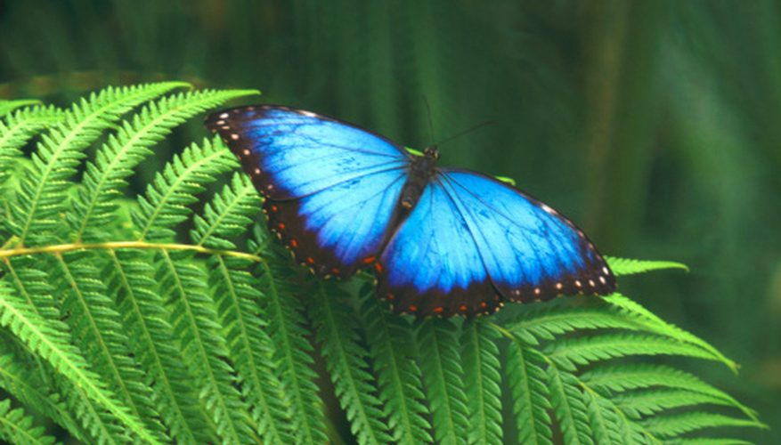
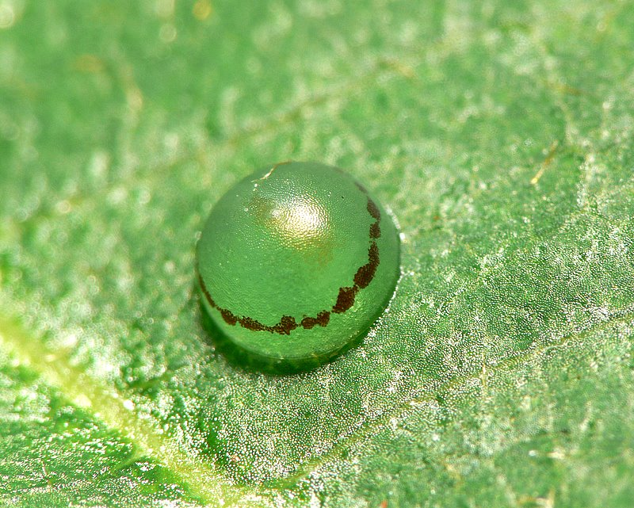
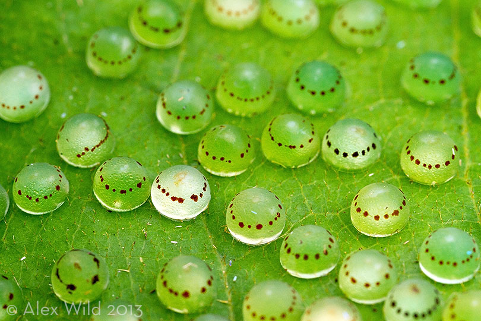
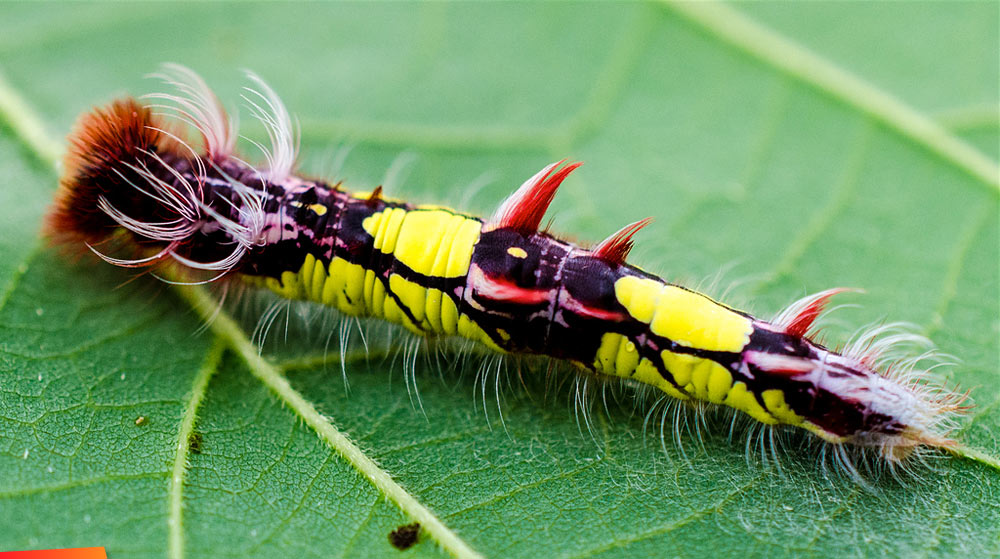
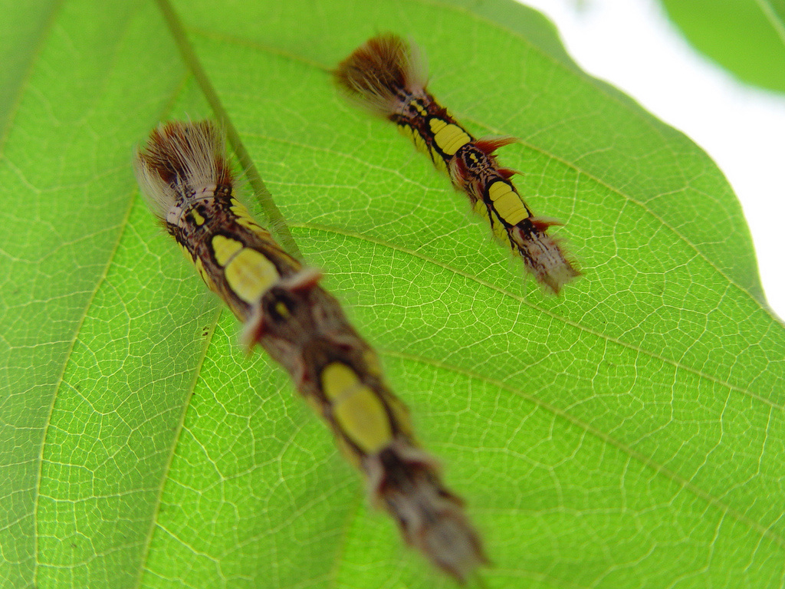
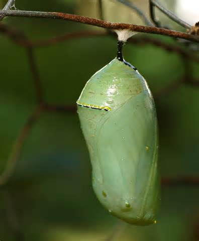
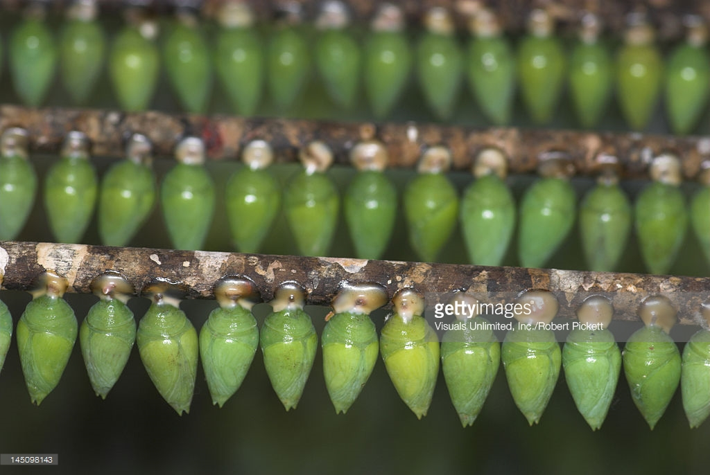
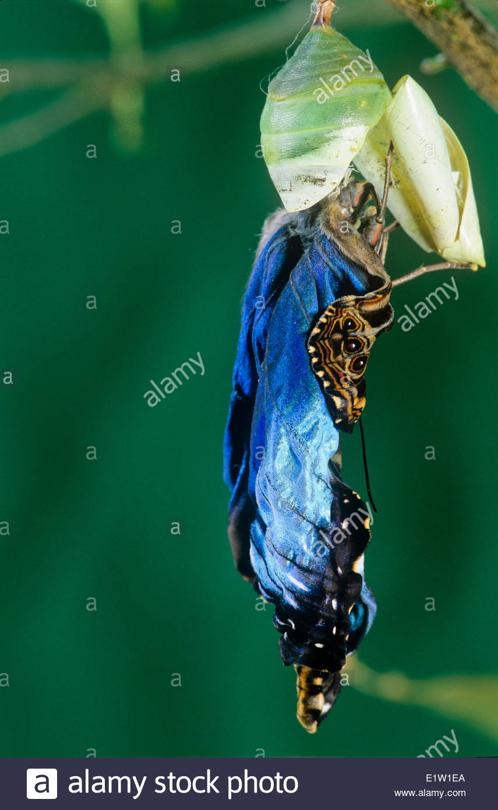

Morpho peleides Kollar, the blue morpho butterfly, also known as the peleides blue morpho or common blue morpho, is a brightly colored butterfly abundant in tropical environments in Central and South America. It can be seen flying in open areas such as paths, trails, forest edges, and rivers, and avoiding dense forest.
Life Cycle
Egg
The eggs of Morpho peleides are small (approximately 1-2 mm in diameter), smooth, hemispherical, and laid on the upper surface of leaves. They are light green in color and have a circular band of small brown spots near the top. The egg stage has been recorded to last anywhere from 7 to 16 days, depending on the subspecies.
 Butter ies lay from 50 - 100 eggs. On average, only two will survive to matu- rity to start a new cycle. Caterpillar
From the egg hatches a caterpillar. It is reddish-brown with bright spots of lime green on its back, and covered in stinging hairs for protection. These hairs can irritate human skin. The caterpillars spend their days feeding on a variety of plants. If disturbed, the caterpillar will secrete a fluid that smells like spoiled butter.
 A freshly-hatched caterpillar will grow a 1000 times its own weight in three weeks. Pupa
The pupal stage of Morpho peleides lasts approximately 14 days. During this time, the pupae are a pale green color and oval in shape. Just before the emergence of the adult butterfly, the pupal skin becomes transparent and the adult is visible
 Adult
The adult Morpho peleides butterflies have black bodies and bright, iridescent blue wings, with the underside of the wings being cryptic brown. The margins of the wings have a black border, which is larger in females than in males. This black border has five or six white spots in the center, beginning at the apex of the forewing and extending downward.
